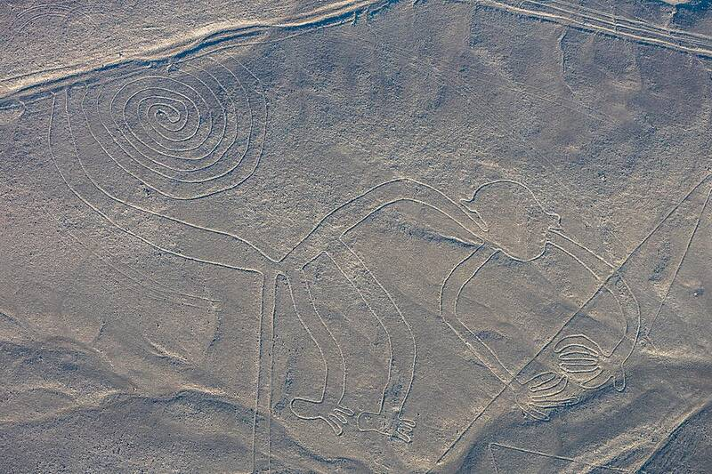

Nazca Lines
Nazca Desert, Peru, about 500 BC to AD 500

Giant figures and lines scraped into the desert floor, best seen from the air. Von Däniken suggested they were alien landing strips. Archaeologists link them to ritual walking paths and water ceremonies of the Nazca people. 1
Open in the interactive Watcher
Related
- Erich von Däniken Person
Sources
- Nazca lines Wikipedia